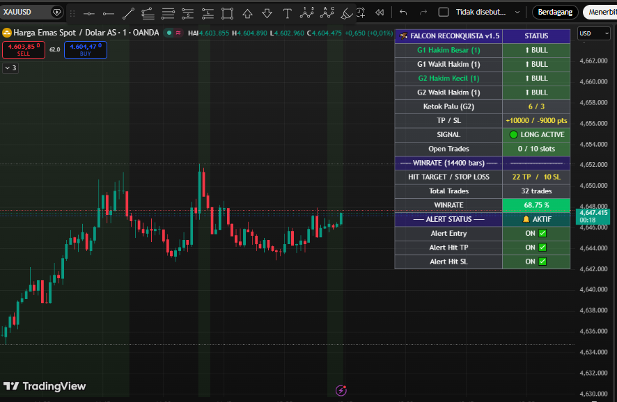

← BACK TO ARSENAL
🛡️ Protocol Reconquista: XAUUSD Mastery
Bukan sekadar indikator lagging. Reconquista v1.5 Gold adalah sistem navigasi real-time yang menggabungkan Hakim Pulse dan Momentum Sync untuk membedah volatilitas Gold secara presisi.
📊 TRADINGVIEW LIVE RADAR (XAUUSD)
Visualisasi sinyal entri Falcon Buy yang presisi menangkap tren kenaikan Gold secara beruntun.

Winrate
68.75%
Total Trades
32
TP Hit
22
Status
AKTiF & Gacor
🧠 Intelligence Analysis Report
Berdasarkan data radar pada 14,400 bars terakhir:
- Winrate Elit (68.75%): Di pair Gold yang liar, konsistensi di atas 60% adalah bukti algoritma Kutuk Palu (G2) bekerja sangat akurat.
- Momentum Stack: Seperti terlihat di screenshot, indikator berhasil menangkap 3-4 sinyal Falcon Buy beruntun tanpa terkena Stop Loss sekalipun.
- Hakim Pulse Confirmation: Sinyal hanya muncul saat sensor G1 (Hakim Besar) dan G2 (Hakim Kecil) dalam kondisi Bullish yang sinkron.
- Clean Execution: Jarak antara titik Entry ke Hit Target tertata rapi, menunjukkan manajemen risiko yang solid.
🎚️ Strategic Flexibility: Total Control
Meskipun audit kami menunjukkan performa stabil pada RR 1:1, Reconquista v1.5 dirancang untuk menjadi instrumen yang adaptif:
- Fully Customizable Parameters: Lu bebas mengubah "jeroan" indikator ini tanpa batas untuk mencari fine-tuning terbaik.
- Dynamic RR Ratio: Sesuaikan nilai parameter untuk mencari Sweet Spot RR yang lebih agresif (1:2, 1:3, dst).
- Hidden Logic: Parameter mencakup sensitivitas deteksi momentum dan filter noise untuk eksperimen strategi "Holy Grail".
"Kami memberikan mesinnya, Anda yang menentukan kecepatannya."
DEPLOY THE RADAR NOW
Jangan buta arah di market Gold. Gunakan Reconquista v1.5 untuk navigasi presisi.
HUBUNGI MARKAS (TELEGRAM)